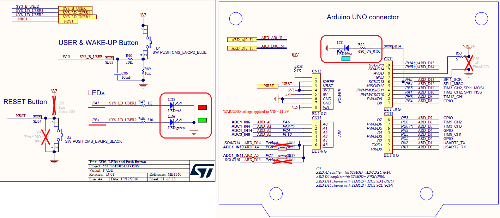

Содержание
- STM32 & Rust - Hello World по Embedded или мигаем светодиодом
- STM32 & Rust - RCC Система тактирования
В мире встраиваемой разработки, “Hello World” обычно означает мигание светодиодом. В данной статье рассматриваются бегущие огоньки на трех светодиодах отладочной платы 32F723EDISCOVERY.

Светодиоды на отладочной плате подключены к следующим пинам:
- LD1 (синий) - пин PA5
- LD5 (красный) - пин PA7
- LD6 (зеленый) - пин PB1
Ниже приведен код, последовательно включающий каждый светодиод с заданной задержкой в основном цикле работы программы. Github
#![no_std]
#![no_main]
use cortex_m_rt::entry;
use cortex_m::delay::Delay;
#[allow(unused_imports)]
use panic_halt;
use stm32f7xx_hal::{
pac,
prelude::*,
};
const P_MS:u32 = 500; // время в течении которого будет гореть один светодиод
#[entry]
fn main() -> ! {
// инициализация периферии
let dp = pac::Peripherals::take().unwrap();
let cp = cortex_m::Peripherals::take().unwrap();
// настраиваем тактирование на значение по умолчанию
let rcc = dp.RCC.constrain();
let clocks = rcc.cfgr.set_defaults().freeze(); // частота системной шины 216МГц для STM32F723
// создаем переменные связанные с необходимыми портами
let gpioa = dp.GPIOA.split();
let gpiob = dp.GPIOB.split();
// создаем мутабельные переменные (т.к. будем менять состояние пинов) связанные пинами на котрых находятся светодиоды
let mut led_blue = gpioa.pa5.into_push_pull_output(); // работа с режиме push-pull с пином 5 порта A
let mut led_red = gpioa.pa7.into_push_pull_output(); // работа с режиме push-pull с пином 7 порта A
let mut led_green = gpiob.pb1.into_push_pull_output(); // работа с режиме push-pull с пином 1 порта B
// состояние по умолчанию всех пинов 0
led_blue.set_low();
led_red.set_low();
led_green.set_low();
// задержка будет привязана к системе тактирования и измеряться в секундах
let mut delay = Delay::new(cp.SYST, clocks.sysclk().to_Hz());
// бесконечный цикл в котором будет происходить работа программы
loop {
// зажигаем синий светодиод на P_MS мс, остальные гасим
led_blue.set_high();
led_red.set_low();
led_green.set_low();
delay.delay_ms(P_MS);
// зажигаем красный светодиод на P_MS мс, остальные гасим
led_blue.set_low();
led_red.set_high();
led_green.set_low();
delay.delay_ms(P_MS);
// зажигаем зеленый светодиод на P_MS мс, остальные гасим
led_blue.set_low();
led_red.set_low();
led_green.set_high();
delay.delay_ms(P_MS);
}
}